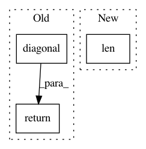

982812930b16bd22b6b887c9b7bc4f7754458bc5,pygsp/graphs/gutils.py,,check_connectivity,#Any#,13
Before Change
if not hasattr(G, "directed"):
G.directed = is_directed(G)
// Removing the diagonal
A = G.W - np.diag(G.W.diagonal())
if G.directed:
return _check_connectivity_directed(A, **kwargs)
else:
return _check_connectivity_undirected(A, **kwargs)
After Change
visited = np.zeros(G.N, dtype=bool)
stack = [0]
while len(stack):
v = stack.pop()
if not visited[v]:
visited[v] = True
In pattern: SUPERPATTERN
Frequency: 3
Non-data size: 3
Instances
Project Name: epfl-lts2/pygsp
Commit Name: 982812930b16bd22b6b887c9b7bc4f7754458bc5
Time: 2015-10-01
Author: lionel.martin@epfl.ch
File Name: pygsp/graphs/gutils.py
Class Name:
Method Name: check_connectivity
Project Name: ysig/GraKeL
Commit Name: 22174935d2771cca41cf10dc75bfccf9169451a6
Time: 2018-03-01
Author: y.siglidis@gmail.com
File Name: grakel/kernels/neighborhood_subgraph_pairwise_distance.py
Class Name: neighborhood_subgraph_pairwise_distance
Method Name: fit_transform
Project Name: GPflow/GPflow
Commit Name: f4559a3d47510f776b3e38d5aceb07ee4b4b0ea9
Time: 2017-11-24
Author: james@prowler.io
File Name: gpflow/transforms.py
Class Name: DiagMatrix
Method Name: backward